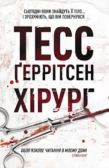

Назарук Віктор Олегович
Назва книги: Хірург
Автор: Тесс Ґеррітсен
Жанр: роман, кримінальний жанр
Рік видання книги: 2001
Короткий опис
Хірург (англ. The Surgeon) — детективний трилер Тесс Геррітсен. Перша книга серії романів про детектива Джейн Ріццолі та медичного експерта Моуру Айлз. Вперше опублікований 2001 року.
Про автора
12 червня 1953
Тесс Ґеррітсен (англ. Tess Gerritsen) — американська письменниця китайського походження. Авторка бестселерів у жанрі медичного та романтичного трилера. Тесс Ґеррітсен народилася 12 червня 1953 року в Сан-Дієго, США. З дитинства мріяла написати романи зі своєю власною Ненсі Дрю. Змінила ім'я Террі на більш жіночне Тесс, коли почала писати любовні романи. Сім'я схилила її до вибору кар'єри медика, хоча та палко бажала стати письменницею. 1975 року Ґеррітсен отримала ступінь бакалавра з антропології в Стенфордському університеті, а 1979 року здобула медичний ступінь в Каліфорнійському університеті та почала працювати лікарем в Гонолулу, Гаваї. Будучи в декретній відпустці, подала своє коротке оповідання «Про вибір правильного Крек Сіда» (Crack Seed — вид зневоднених консервованих фруктів. Популярна закуска на Гаваях) на конкурс, який проводив журнал «Гонолулу». Зрештою посіла перше місце, яке принесло їй приз у 500 доларів. Історія зосереджувала свою увагу на роздумах молодика про складні стосунки з матір'ю. Ґеррітсен стверджувала, що це оповідання допомогло їй впоратися з власною дитячою травмою (йдеться, зокрема, про численні спроби її матері накласти на себе руки). Одружена з лікарем Джейкобом Ґеррітсеном. Має двох синів. Любить грати на скрипці, а також займається садівництвом. Живе в містечку Кемден, штат Мен.
Зміст
«Я знаю, як це станеться. У моїй голові яскрава картинка, я чітко уявляю послідовність подій, які приведуть до знахідки. О дев’ятій ранку ці самозакохані дамочки з туристичної агенції „Кендалл та Лорд“ сидітимуть за своїми столами, а їхні пальці з бездоганним манікюром вистукуватимуть клавіатурою, резервуючи середземноморський круїз для місіс Сміт, гірськолижний курорт Клостерс для містера Джонса, а для містера та місіс Браун цього року щось особливе, екзотичне – приміром, Чіанг-Май або Мадагаскар, однак жодних незручностей, о ні, мандрівка перш за все має бути комфортною. Адже девіз агенції „Кендалл та Лорд“: „Пригоди з комфортом“. Це відома агенція, і телефон тут майже не змовкає.
Невдовзі дамочки помітять, що Діани немає на робочому місці.
Одна з них зателефонує до помешкання Діани в районі Бек-Бей, але дзвінок залишиться без відповіді. Може, Діана в дýші і не чує телефон. Або вже їде на роботу і спізнюється. У голові дамочки промайнуть десятки різних цілком безневинних припущень. Та день хилитиметься до вечора, на повторні дзвінки ніхто не відповідатиме, і на думку їй спадуть інші, значно тривожніші припущення.
Гадаю, що саме управитель будинку впустить співробітницю Діани до квартири. Я бачу, як він нервово перебирає пальцями в’язку ключів і каже: „Ви її подруга, так? Ви впевнені, що вона не буде проти? Бо я мушу повідомити їй про те, що впустив вас“.
Вони заходять до квартири, і співробітниця гукає: „Діано? Ти вдома?“ Вони рушають коридором, минають туристичні плакати в гарних рамах, управитель ні на крок не відстає і слідкує, аби вона часом нічого не поцупила.
Тоді крізь прочинені двері він зазирає до спальні. Він бачить Діану Стерлінґ – і його більше не хвилюють такі дрібниці, як крадіжка. Єдине його бажання – якомога швидше залишити цю квартиру, доки не знудило.
Мені б хотілося бути там, коли приїде поліція, але я не такий дурний. Я знаю, що вони перевірятимуть кожну автівку, яка проїде повз, кожне обличчя, яке витріщатиметься з юрби глядачів на вулиці. Вони знають, як сильно я хочу повернутися. Навіть зараз, коли сиджу в кав’ярні „Старбакс“ і споглядаю, як за вікном займається день, я відчуваю, що та кімната кличе мене. Та я ніби Одіссей, міцно прив’язаний до щогли свого корабля, аби вберегти себе від знадливих пісень сирен. Я не дозволю собі розбитися об скелі. Я не припущуся такої помилки.
Натомість я сиджу і потягую свою каву, а за вікном прокидається Бостон. Я присмачив каву трьома ложками цукру. Я люблю солодку каву. Я люблю, щоб усе було правильно. Щоб усе було бездоганно.
Удалині пронизливо кричить сирена, вона кличе мене. Я почуваюся Одіссеєм, що рветься зі своїх пут, але вони міцно тримають мене.
Сьогодні вони знайдуть її тіло.
Сьогодні вони дізнаються, що ми повернулися.»
Детектив Томас Мур не терпів запаху латексу, і щойно він натягнув рукавички, здмухнувши з них хмарку тальку, як відчув уже знайомий напад нудоти. Той осоружний запах був пов’язаний із найнеприємнішим аспектом його роботи, і, ніби для однієї з собак Павлова, натренованої за сигналом виділяти слину, для нього той запах гуми незмінно асоціювався з кров’ю та іншими рідинами людського організму. Таке собі нюхове попередження опанувати себе.
Так він і зробив, зупинившись перед входом до прозекторію. Увійшов туди прямісінько зі спеки й одразу відчув, як на чолі замерзають крапельки поту. У п’ятницю, 12 липня, після опівдня було спекотно, і місто огорнув задушливий серпанок. По всьому Бостону гуркотіли кондиціонери, люди знемагали від задухи. На мості Тобін уже скупчилися автівки – усі прямували на північ, до прохолоди лісів Мену. Але Муру не пощастило так, як їм. Його викликали з відпустки, і зараз він мав зустрітися з жахом, якого не хотів бачити.
Він уже накинув хірургічний халат, який узяв із лікарняного візка для розвезення білизни. Тоді надягнув медичну шапочку, щоб сховати неслухняне волосся , а на ноги натягнув бахіли – він бачив, що іноді може впасти зі столу на підлогу. Кров, клапті тканин. Його важко було назвати чистуном, однак Мур не мав ані найменшого бажання на своїх підошвах принести додому якусь гидоту з прозекторію. Він затримався на кілька секунд і глибоко вдихнув. А тоді, подумки приготувавшись до випробування, увійшов до приміщення.
На столі лежав накритий простирадлом труп. За обрисами – жіночий. Мур старався надто довго не дивитися на жертву й зосередився на живих людях, які були в прозекторії. Патологоанатом доктор Ешфорд Тірні та працівник моргу розкладали на таці інструменти. Через стіл навпроти Мура стояла Джейн Ріццолі, ще один детектив із бостонського відділу розслідування убивств. Тридцятитрирічна Ріццолі була невисокою жінкою з різьбленим квадратним підборіддям. Її неслухняні кучері ховалися під медичною шапочкою, і без темного волосся, що згладжувало її риси, на обличчі проступали самі лише гострі кути, а темні очі були проникливі й пильні. Півроку тому її перевели сюди з відділу боротьби з наркотиками. Вона була єдиною жінкою в їхньому колективі і вже встигла погаркатися з одним із детективів – звинувачення в сексуальних домаганнях, зустрічні звинувачення в нестерпній стервозності. Мур і сам не знав, чи подобається йому Ріццолі, а тим більше – чи він подобається їй. Дотепер у них були виключно ділові стосунки, і йому здавалося, що це її влаштовує.
Біля Ріццолі стояв її напарник, Баррі Фрост, неймовірно життєрадісний коп. З добродушним чисто виголеним обличчям він виглядав молодшим за свої тридцять років. Фрост ось уже два місяці без жодних нарікань працював із Ріццолі. Він був єдиним чоловіком у відділі, який спокійнісінько витримував її паскудний характер.
Коли Мур підійшов до столу, Ріццолі сказала:
– А ми вже й не знали, коли ви з’явитесь.
– Я їхав трасою, коли ви надіслали повідомлення на мій пейджер.
– Ми чекаємо тут від п’ятої години.
– А я тільки починаю внутрішній огляд, – озвався доктор Тірні. – Тож детектив Мур прибув саме вчасно.
Один чоловік заступається за іншого. Він грюкнув дверцятами шафи, кімнатою пронісся лункий брязкіт. То був один із тих рідкісних випадків, коли він дозволяв собі показувати роздратування. Доктор Тірні, галантний джентльмен родом із Джорджії, притримувався думки, що леді мають поводитися як леді. Його теж не тішила робота з колючою Ріццолі.
Працівник моргу прикотив до столу візок із інструментами, і на мить його погляд зустрівся з поглядом Мура, недвозначно промовляючи: «Ти можеш повірити цьому стерву?»
– Шкода, що зіпсували вашу риболовлю, – звернувся Тірні до Мура. – Схоже, що ваша відпустка скасовується.
– Ви впевнені, що це знову наш хлопець?
У відповідь на запитання Тірні простягнув руку до столу і відкинув простирадло, відкриваючи тіло.
– Її звати Елена Ортіз.
Хоч Мур і налаштувався на те, що видовище буде не з приємних, перший погляд на жертву був для нього ніби удар кулаком. Сплутане чорне волосся жінки позлипалося від крові і стирчало, ніби голки дикобраза, навколо її обличчя кольору голубого мармуру. Губи були напіввідкриті, наче застигли саме тієї миті, коли вона намагалася щось сказати. Кров уже змили з її тіла, і рани зяяли рожевуватими прорізами на сірому полотнищі шкіри. У неї було дві видимі рани. Глибокий поріз на шиї, що тягнувся від лівого вуха, перетинав сонну артерію і відкривав гортанний хрящ. Coup de grace, смертельний удар. Інший поріз проходив у нижній частині живота. Цю рану було завдано не для вбивства. Її мета була зовсім інша.
Мур із зусиллям ковтнув.
– Тепер я розумію, чому ви викликали мене з відпустки.
– Я головний детектив у цій справі, – зауважила Ріццолі.
У її словах вчувалися застережливі нотки – вона хотіла захистити свою територію. Мур добре знав, звідки це береться. Постійні кпини і скептицизм, з якими стикаються жінки-поліцейські, викликають у них таку гостру реакцію. Правду кажучи, він не мав бажання з нею змагатися. Їм доведеться разом вести це розслідування, тому зараз не найкращий час боротися за лідерство.
У спілкуванні з нею він завбачливо дотримувався ввічливого тону.
– Чи не могли б ви ознайомити мене з усіма обставинами?
Ріццолі коротко кивнула.
– Жертву знайшли сьогодні о дев’ятій ранку в її квартирі на вулиці Ворчестер, що в Південному районі. Зазвичай вона приходить на роботу о шостій ранку. Квіткова крамниця «Селебрейшн Флористс», де вона працювала, розташована за кілька кварталів від її дому. Це сімейний бізнес, яким володіють її батьки. Коли вона не прийшла до крамниці, вони почали хвилюватися. Її брат пішов до квартири, аби перевірити, що з нею. Він знайшов її у спальні. Лікар Тірні припускає, що смерть настала десь між північчю і четвертою ранку. Як стверджують родичі, вона ні з ким не зустрічалася, і ніхто з сусідів не бачив, щоб до неї заходили чоловіки. Звичайнісінька працьовита католичка.
Мур глянув на зап’ястя жертви.
– Її знерухомили.
– Так. Скотчем на зап’ястях і щиколотках. Її знайшли оголеною. На ній були тільки прикраси.
– Які прикраси?
– Ланцюжок. Перстень. Маленькі сережки. Зі шкатулки з коштовностями у спальні нічого не зникло. Пограбування не було мотивом злочину.
Мур глянув на горизонтальну смужку синців на стегні жертви.
– Тулуб теж знерухомили.
– Скотч на талії і стегнах. А ще їй заклеїли рот.
Мур важко зітхнув.
– Господи. – Мур дивився на Елену Ортіз, і його бентежив спогад про іншу молоду жінку. Про іншу жертву – білявку з багряними порізами на шиї і животі.
– Діана Стерлінґ, – пробурмотів він.
– Я отримав протокол розтину Діани Стерлінґ, – зауважив Тірні. – Якщо вам необхідно ще раз його переглянути.
Але Мур не мав такої потреби. Розслідування вбивства Стерлінґ, у якому він був головним детективом, засіло в його думках.
Рік тому тридцятирічну Діану Стерлінґ, працівницю туристичної агенції «Кендалл та Лорд», знайшли оголеною в її спальні – жінка була прикута скотчем до свого ліжка. У неї були порізи на шиї і в нижній частині живота. Це вбивство досі не розкрили.
Лікар Тірні спрямував лампу на живіт Елени Ортіз. Рану вже промили від крові, і краї порізу були блідо-рожевого кольору.
– Знайшли якісь зачіпки? – запитав Мур.
– Перед тим як помити тіло, ми зняли з нього кілька волокон. А також на краю рани була волосина.
Мур підняв на нього зацікавлений погляд.
– Вона належить жертві
– Набагато коротша за її волосся. Світло-каштанового кольору.
Елена Ортіз мала чорне волосся.
– Ми вже попросили надати нам зразки волосся усіх, хто працював з її тілом, – додала Ріццолі.
Тірні звернув їхню увагу на рану:
– Тут ми можемо бачити поперечний розріз. Хірурги називають його розрізом Майларда. Передньобокову стінку живота розтинали шар за шаром. Спершу шкіру, тоді поверхневу фасцію[3], м’язи і нарешті очеревину[4].
– Як і в Діани Стерлінґ, – сказав Мур.
– Так. Як у Діани Стерлінґ. Але є й певні відмінності.
– Які?
– У Діани Стерлінґ місцями була рвана рана, що може свідчити про вагання або невпевненість убивці. Тут такого немає. Бачите, як рівно розрізана шкіра? Жодних обрив ів. Він упевнено робив свою справу. – Тірні і Мур зустрілися поглядами. – Наш убивця вчиться. Він покращив свою техніку.
– Якщо це той самий злочинець, – зауважила Ріццолі.
– Тут є ще й інші збіги. Бачите загнутий край рани? Це означає, що різали справа наліво. Як і в Стерлінґ. Лезо, яке використовували для розрізу, гостре, без зубців. Як і те, яким убили Стерлінґ.
– Скальпель?
– Схоже на те. Рівний розріз вказує на те, що лезо не сіпалося. Або жертва знепритомніла, або ж її міцно зв’язали і вона не могла рухатись, не могла вириватися. Вона не могла завадити лезу, воно плавно рухалося по прямій.
Баррі Фрост виглядав так, ніби його зараз знудить.
– Ой. Боже. Будь ласка, скажіть, що вона вже була мертва, коли він робив це.
– Боюсь, що це не посмертна рана. – Понад хірургічною маскою виднілися тільки зелені очі лікаря Тірні, і вони горіли люттю.
– Перед смертю в неї була кровотеча? – запитав Мур.
– Внутрішня кровотеча в черевній порожнині. А це означає, що на той час її серце ще працювало. Вона була ще жива, коли… відбувалася ця процедура.
Мур глянув на посмуговані синцями зап’ястя. Схожі синці вкривали її щиколотки, а на стегнах – смужка маленьких підшкірних крововиливів. Елена Ортіз намагалася вирватися зі своїх пут.
– Є й інші докази того, що під час розрізу вона ще була жива, – сказав Тірні. – Запхайте руку в її рану, Томасе. Гадаю, ви вже знаєте, що знайдете всередині.
Мур неохоче просунув руку в черевну порожнину. Тіло було холодне, крижане від кількох годин лежання в холодильнику. Це нагадувало йому відчуття, коли він запихав руку всередину тушки індички, намагаючись витягти звідти тельбухи. Він занурив руку по зап’ястя і почав обмацувати стінки рани. Це було грубе втручання до найінтимнішої частини жіночого тіла. Він намагався не дивитися на обличчя Елени Ортіз. Лише так він міг зберігати спокій і зосередитися на суто технічному аспекті того, що сталося з її тілом.
– Немає матки. – Мур подивився на Тірні.
Патологоанатом кивнув.
– Її вирізали.
Мур вийняв руку і пильно глянув на рану, роззявивши рота від здивування. Тепер Ріццолі запхала всередину свою руку, намагаючись дослідити рану своїми короткими пальцями.
– Більше нічого не вирізали? – запитала вона.
– Тільки матку, – сказав Тірні. – Сечовий міхур і кишечник він не чіпав.
– А що це таке я намацала? Твердий вузлик, з лівого боку, – сказала вона.
– Це шов. Він зробив його для того, щоб зчепити кровоносні судини.
Ріццолі підняла на нього очі, приголомшена.
– Тобто, це хірургічний шов?
– Звичайний кетгут 2/0, – припустив Мур і глянув на Тірні, чекаючи його підтвердження.
Тірні кивнув.
– Точно такий шов ми знайшли і в Діани Стерлінґ.
– Кетгут 2/0? – слабким голосом запитав Фрост. Він відійшов від столу і стояв у кутку, готовий щомиті кинутися до умивальника. – Це що, назва якогось бренду?
– Ні, це не назва бренду, – відказав Тірні. – Кетгут – це вид хірургічної нитки, виготовленої з кишок корів або овець.
– Тоді чого вона називається кетгут? – запитала Ріццолі.
– Ця назва сягає ще часів Середньовіччя. Тоді з кишок тварин робили струни для музичних інструментів. Це слово вигадали тодішні музи́ки. У хірургії такі нитки використовують для зшивання глибоких шарів сполучної тканини. З часом вони розсмоктуються в організмі.
– А де він міг узяти цей кетгут? – Ріццолі глянула на Мура. – Ви знайшли джерело його походження у справі Стерлінґ?
– Майже неможливо визначити конкретне джерело, – сказав Мур. – Кетгут виробляють десятки компаній, більшість з яких в Азії. Його досі використовують у багатьох закордонних лікарнях.
– Лише в закордонних?
– Зараз є кращі матеріали, – зауважив Тірні. – Кетгут не такий міцний і довговічний, як синтетичні нитки. Сумніваюся, що в США є багато лікарів, які досі ним користуються.
– Навіщо вбивця взагалі зробив той шов?
– Щоб кров не заважала його огляду. Щоб якийсь час стримувати кровотечу і бачити, що він робить. Наш злочинець дуже охайний.
Ріццолі вийняла руку з рани. На її рукавичці залишився невеличкий згусток крові, схожий на червону намистинку.
– Що він уміє? Ми маємо справу з лікарем? Чи з м’ясником?
– Очевидно, що він знає анатомію, – відповів Тірні. – Я впевнений, що він робив таке й раніше.
Мур на крок відійшов від столу, відганяючи думки про те, які страждання довелося пережити Елені Ортіз, але ніяк не міг опанувати себе. Її понівечене тіло лежало перед ним із широко розплющеними очима.
На металевій таці забряжчали інструменти, і він рвучко обернувся. Працівник моргу підкотив візок до лікаря Тірні, який готувався зробити Y-подібний розріз. Тепер ще й працівник моргу схилився над столом, щоб зазирнути в рану.
– А що далі? – запитав він. – Він видалив матку, і що він з нею робить?
– Цього ми не знаємо, – відказав Тірні. – Органів ніколи не знаходили.